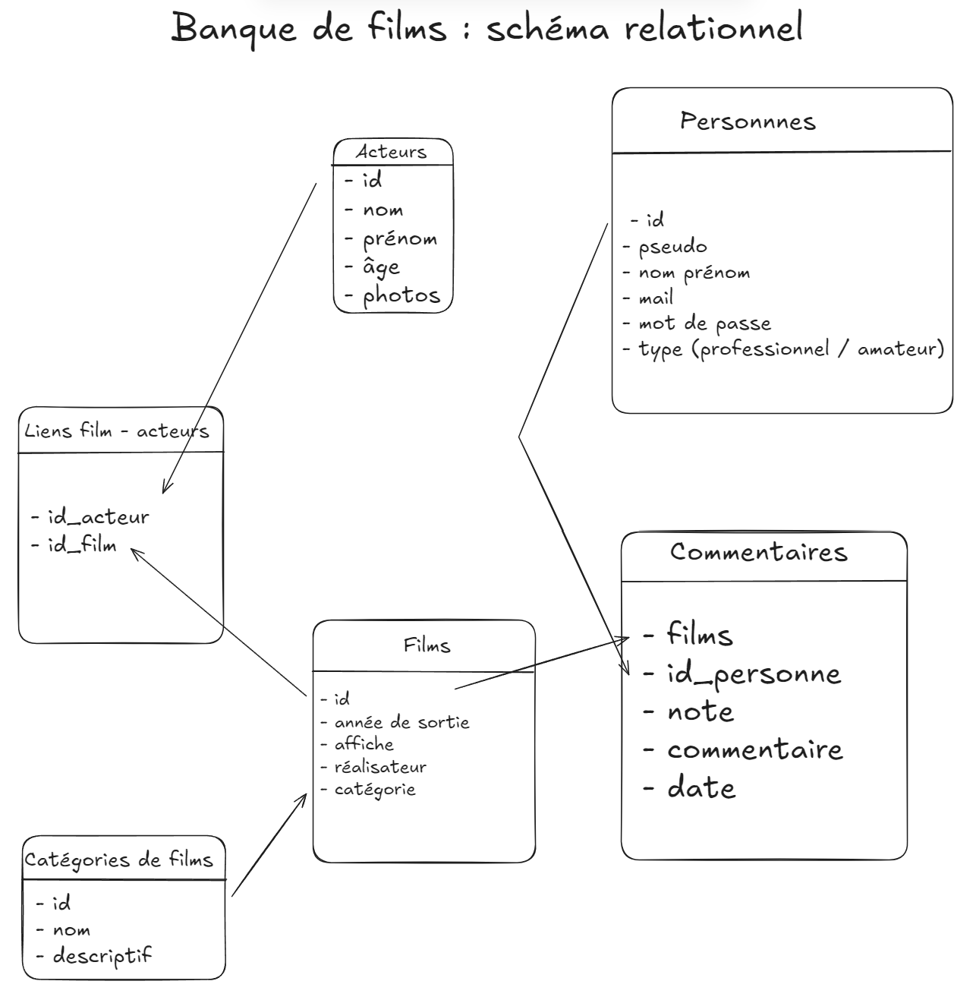
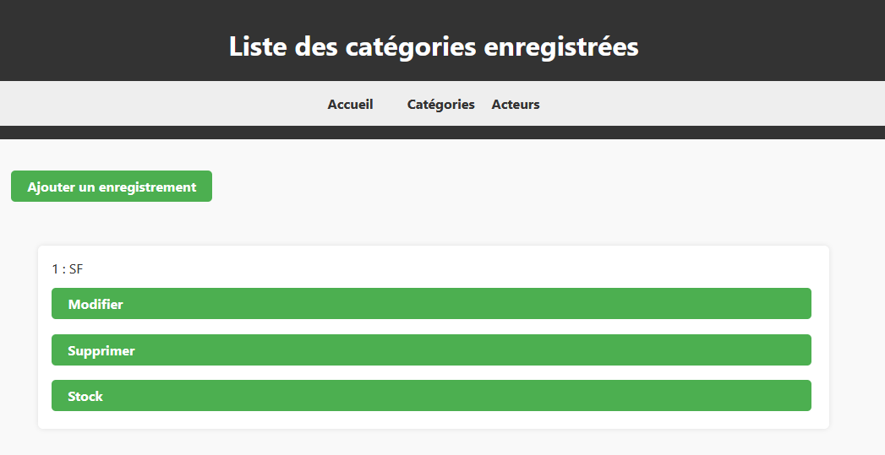
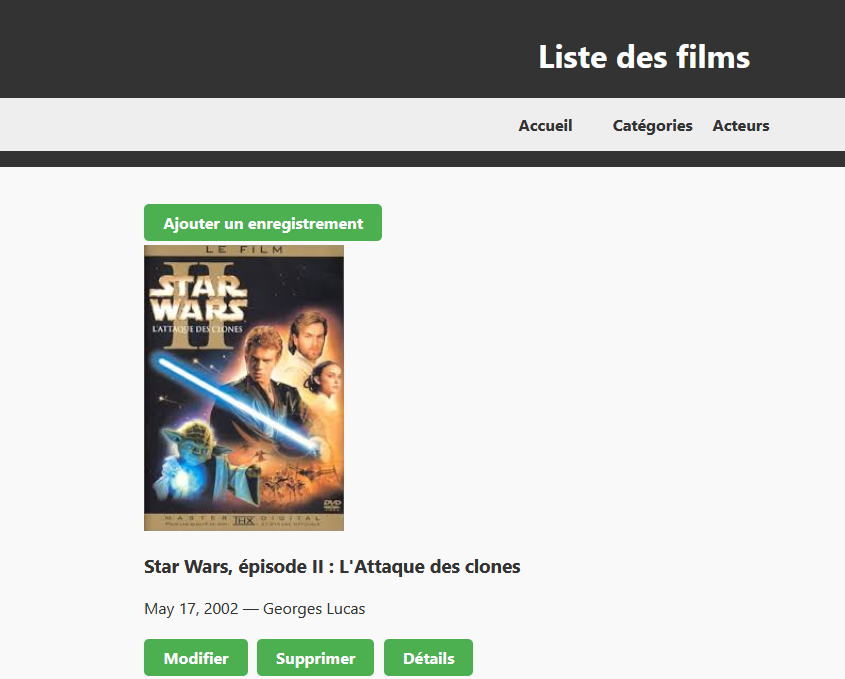

Résumé de la SAE
Objectif : Le but de ce projet était de mettre en place un site web dynamique (dans mon cas, une banque de films) s'appuyant sur une base de données SQL. Pour le développement du site web, j'ai pu utiliser le principe CRUD (Create Read Update Delete) avec le framework Django pour Python.
Compétences acquises : Développement de sites web, utilisation de Django, modélisation et utilisation de requêtes SQL, et mise en place de machines virtuelles pour le déploiement.
Consulter le code source sur GitHubEnvironnement et Outils
Python
Langage de programmation principal utilisé pour la logique métier et le backend du projet.
Django
Framework Web Python haut niveau permettant un développement rapide et respectant l'architecture MVT (Model-View-Template).
HTML5
Langage de balisage utilisé pour structurer les vues (templates) et l'interface utilisateur de l'application.
VirtualBox
Outil de virtualisation utilisé pour créer des machines virtuelles (VM Linux) afin de déployer et héberger le serveur web.
MariaDB
Système de gestion de base de données relationnelle (SGBDR) utilisé pour le stockage des tables de l'application sur le projet final.
Modélisation de la Base de Données
Avant de débuter l'implémentation sous Django, la première étape consistait à modéliser la structure des données via un schéma relationnel, correspondant aux besoins d'une banque de films (référencement des films, catégories, acteurs, et gestion des commentaires par des utilisateurs). L'application repose au final sur une base de données MariaDB.

Interface Utilisateur et Formulaires
L'interface du site a été pensée pour permettre aux utilisateurs d'interagir avec la base de données de films. Le site intègre de multiples formulaires offrant la possibilité d'ajouter des catégories, des films, des utilisateurs, des acteurs, et bien sûr des commentaires.


Organisation des Templates (Architecture MVT)
Pour respecter l'architecture Model-View-Template de Django, j'ai organisé le projet autour de modèles HTML réutilisables. Le dossier templates contient 5 sous-dossiers correspondant aux entités, chacun implémentant les opérations CRUD.
index.html
Fichier racine servant de squelette principal à l'application.
- Page d'accueil du projet.
- Contient le menu de navigation commun à toutes les pages.
- Contient un lien d'accès vers la page de liste des films.
- Sert de template parent (via les balises de bloc Django) pour les autres vues.
affiche.html
Permet d'afficher les informations détaillées d'une entité spécifique (ex: détails d'un film). (Non nécessaire pour toutes les entités).
ajout.html
Contient le formulaire permettant la Création (Create) d'une nouvelle entité. Nécessaire pour tous les CRUD.
modifier.html
Permet de Mettre à jour (Update) les informations d'une entité existante. Est basé sur la structure du formulaire d'ajout.
supprimer.html
Vue de confirmation permettant la Suppression (Delete) d'une entité. Nécessaire pour tous les CRUD.
afficher_all.html
Permet de Lire (Read) l'ensemble des entités d'une table.
Peut utiliser un identifiant (id) pour filtrer l'affichage (ex: tous les films d'un genre, tous les commentaires d'un film...).
Gestion de projet & Déploiement
Planification avec Gantt
La réalisation du projet a débuté par une phase de structuration et de répartition des tâches, matérialisée par la réalisation d'un diagramme de Gantt. Nous avions plusieurs séances d'études et devions nous séparer le travail, c'est pourquoi cette méthode de planification s'est avérée particulièrement utile pour suivre l'avancement.
Gestion des Utilisateurs
Une méthode basique de gestion (sans sécurité avancée) a été implémentée : à chaque fois qu'un utilisateur souhaite ajouter, modifier ou supprimer un commentaire, il a le choix entre créer son compte ou se connecter, puis accède au formulaire de commentaire.
Déploiement en Machines Virtuelles
Au-delà du développement local, le projet nécessitait la mise en place de machines virtuelles (VM Linux). L'architecture déployée sépare les services : un serveur Apache hébergeant le serveur Web (lié à Nginx et Gunicorn pour Django) et un serveur MariaDB pour héberger la base de données.
Apprentissages Critiques ciblés
- AC13.01 Utiliser un système informatique et ses outils (déploiement de machines virtuelles).
- AC13.02 Lire, exécuter, corriger et modifier un programme Python/Django.
- AC13.04 Connaître l'architecture et les technologies d'un site Web (HTML, CSS, requêtes HTTP, architecture MVT).
- AC13.05 Choisir les mécanismes de gestion de données adaptés (Base de données SQL relationnelle et requêtes ORM Django).
- AC13.06 S'intégrer dans un environnement propice au développement (suivi via Diagramme de Gantt et versionning).
Analyse réflexive et Difficultés
J'ai trouvé cette SAE particulièrement intéressante car elle nous fait utiliser des techniques, allant de la gestion de projet jusqu'à la mise en production.
Cependant, nous avons fait face à plusieurs difficultés qui ont impacté le projet :
- Retard organisationnel : Des difficultés imprévues ont entraîné un décalage par rapport à la planification initiale établie dans le diagramme de Gantt.
- Gestion des médias : La gestion des images avec Django (nécessitant la modification de
settings.pyeturls.py) s'est avérée complexe et n'a finalement pas fonctionné pour l'affichage des photos des acteurs. - Problèmes d'implémentation et de déploiement : Après le déploiement de l'application sur les machines virtuelles, certains liens internes ne fonctionnaient plus, nécessitant des corrections de dernière minute.